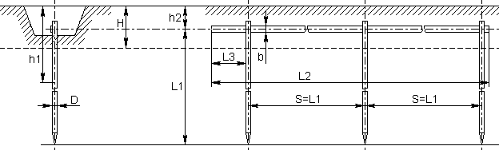
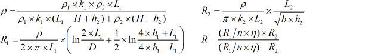

В калькуляторе использована методика расчёта системы заземления в двухслойном грунте состоящей из вертикальных заземлителей, приведённая в «Инструкции по расчёту и проектированию электрохимической защиты от коррозии магистральных газопроводов» (СТО Газпром 2-3.5-047-2006).

